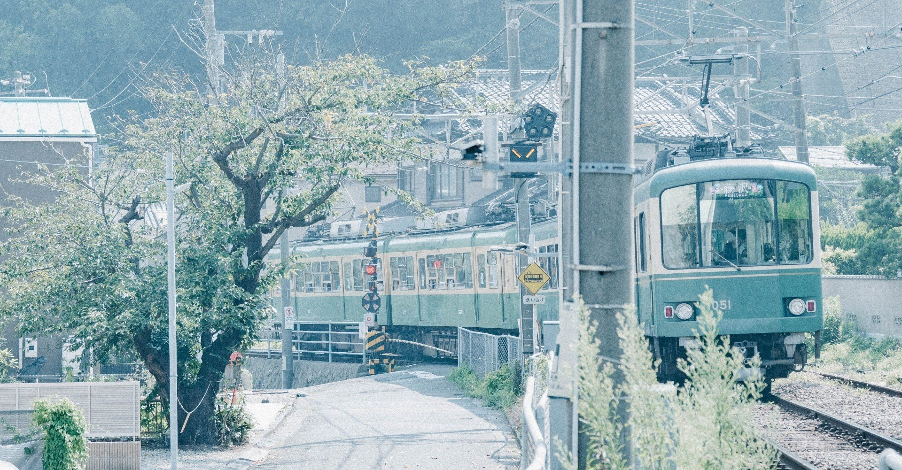

真夏の中をひた走る列車の窓から、光り輝く夏空が見えた。
心地よいほどの青に溶け込む入道雲。鳥は羽根を広げて、僕らを見下ろしている。
君と見た青空。
気づいた時には、もう遠くに行ってしまっていて、もはや目で追うことしかできない。自分がどれほどちっぽけな存在なのかを嫌というほど思い知らされる。
「空を飛べたら、もっと自由なのかな」
君は僕を見上げて言った。できるだけ空に手を伸ばしてみる。
アスファルトを焼く夏の陽射し。忙しないセミの鳴き声。微かに感じる生温かい風。そのどれもがこの広大な夏空の下にあった。
「自由な分、怖い思いもすると思う。このまま二人で一緒にいた方が気楽だよ」
そう言うと、君は何も言わず視線を前に戻す。僕も何も言わず、車いすをゆっくりと動かす。
妹の夏海が事故に遭って三年。二人して街に行くことすら簡単なことではなくなった。
あの瞬間だけ時が戻ってくれたら。あの瞬間だけ夏海と僕が入れ替わることさえできれば。そう何度、心から願っただろう。
僕らが住む北海道の夏は短い。それでも夏海は夏が好きだった。
中学に上がるまでは毎年海水浴に行って、泳げない僕はよく置き去りにされた。海の家では冷たいカギ氷を一緒に食べた。家族で夏祭りにも行った。射的で欲しいものをねだられて、僕は一生懸命狙いを定めた。金魚すくいでたくさん金魚をすくえると、僕に自慢してきた。
夏海はいつも楽し気で笑顔だった。僕らは仲の良い兄妹だった。
そんな僕らを壊したのは一瞬の出来事だった。
高校三年の冬。いつもの登校中に夏海は事故に遭った。命は取り留めたものの、自力で歩くことができなくなった。
既に決まっていた東京の大学への進学も諦めざるを得なかった。夏海は上京どころか、一人で生活することすら難しくなった。
僕は当時大学三年で、ぼんやりと一般企業への就職を目指していたが、夏海のことがきっかけで社会福祉士を目指すことにした。
当時感じていた兄としての不甲斐なさや妹の未来を妨害した事故への怒りをエネルギーに変え、どうにかして支えになりたい一心で資格を取り、福祉団体に就職した。
それでも、僕らの距離は縮まらなかった。
夏海は地元の理解ある会社に就職できたものの、ここ数年は会社と家の往復だけ。簡単に出かけることはできなくなったが、夏海自身も外出することに抵抗があった。
僕は夏海の近くにいたかったため地元での就職を強く希望したが叶わず、泣く泣く実家を出たこともあり、夏海とはあまり顔を合わさなくなった。
たまの休みに帰省した時も、夏海は避けるように部屋に閉じこもった。両親同様、僕はそんな妹に何もできなかった。昔も今も、夏海を独りにさせてしまっていた。
何もないまま、ただ時間は過ぎた。その間、季節は概ね正しく移り変わりを見せた。
夏からバトンを受けた秋が終わると、うんざりするほどの雪が降り始める。最近は温暖化のせいか例年より早く桜が咲いて、あっという間に年を重ねる。そのどれもがモノクロで黒い影を落としているかのようだった。
僕は壊れた目覚まし時計のような感覚だった。誰かを起こすことが役目なのに、僕自身が眠り続けていた。
「夏海。一緒に出かけたい所があるんだ」
お盆に連休が取れ、地元の旭川に帰省していた頃。久しぶりに夏海の部屋に入った時、僕もいつの間にか夏海を遠ざけていたような気がした。
「どこに」
「美瑛。ほら昔よく行ってた」
「嫌だよ。お兄ちゃん、どうせ最近は車運転してないでしょ」
事故後、夏海は車に近づくことすら嫌うようになった。
それは当たり前のことだ。自由を奪ったものに対して嫌悪感を抱かない人間はいない。
「これで行こうよ」
そう言って、背中を向けたままの夏海に切符を渡した。そこには“旭川から美瑛町”と印字されている。
夏海はやっぱり嫌がったけど、「どうしても一緒に見たいものがあるんだ」とだけ伝えると、「期待外れだったら怒るからね」としぶしぶ了承してくれた。
北海道の夏は他の地域に比べると涼しい方だが、それでも汗は噴き出た。夏海は母に貸してもらった麦わら帽子を被り、ハンカチで汗をぬぐっている。
ようやく駅に着くと列車がくるまで、僕らは駅の待合室で待つことにした。二人で出かけるのは久しぶりだった。夏海に自販機で買ったお茶を手渡す。
列車がやってくると僕らはボックスシートに向かい合わせに座った。夏海と向かい合うのは懐かしくて、子どもの頃を思い出すようだった。
しばらく僕らはぼんやりと車窓からの景色を眺めていた。
果てしなく続くあぜ道、脈々と連なる山々、夏を涼ませる川べり。その全てが、かつては父の運転する車からの景色だった。
「事故に遭ってから、何がしたかったのか忘れていたの」
夏海はふいにそう口にした。
「これから何もできないんじゃないかって思ってた」
夏海は独り言のように、風景を見ながら言う。
「このまま動けなくてもいいやって思ったこともあった」
僕は夏海の声を代弁する。言葉にするだけで、胸が張り裂けそうになる。
「何だか、最近はつまらないことばかり言ってた気がする。こうじゃなきゃいけない、こうしなきゃ夏海を傷つけてしまうって」
僕も独り言のように言った。夏海に言っているようで、自分に言っているようにも思えた。
「でも、違ったよ。僕が僕自身を失うことが、夏海を傷つけた」
本来の自分を取り戻すため、今こうして列車に揺られている。
何をするでもない。そんな時間が子どもの頃を思い出させてくれた。
もしあの事故がなかったら。今頃、夏海は東京で元気に暮らしていただろう。
もしあの事故がなかったら。今頃、僕らはどんな風に生きていただろう。
揺れ動く車内の中、僕らは自然と子どもの頃の話をした。「ほんとにお兄ちゃんって情けなかったよね」「夏海こそ、あの頃はよく泣いてたじゃんか」大人げなく、今になってはどうでもいいことを言い争ったりしたけど、そんな時間が心から楽しかった。
夏海の口元は自然とほころんでいた。以前は何とも思わなかったその表情は、心に深く刻み込まれた。
「あっ。見えてきたよ。ほら、見て」
時間の感覚を忘れかけた頃、車掌のアナウンスとともに美瑛の景色が見えてきた。夏海の声はいつもより弾んでいた。
僕は立ち上がり、車いすを押して、列車の降車ドアに向かう。
久しぶりに沸き起こる高揚感が、晴れ渡る夏空みたいだと思う。
空って、手に届かないから輝いている。自由って、手に届かないから心奪われる。
僕らはずっと不自由だ。届かないものばかり追いかけて、時々馬鹿らしく思えるよ。
でも、たどり着けなくても生きているだけで楽しく思える時もあるんだ。
怖がる必要なんてない。
多分僕らは空にとって形を変える雲であり、思いのままに滑空する鳥みたいなんだ。
プラットフォームに降りると、夏海は空に手を伸ばした。次第に二人して笑顔になった。
互いに顔は見合わせていないけど、それでも今は、前だけを見ていたい。
「懐かしい。こんなにも青かったんだ」
あの青空の下で、僕らはきっと思い出す。
夏空はいつだって、僕らを自由にしてくれることを。